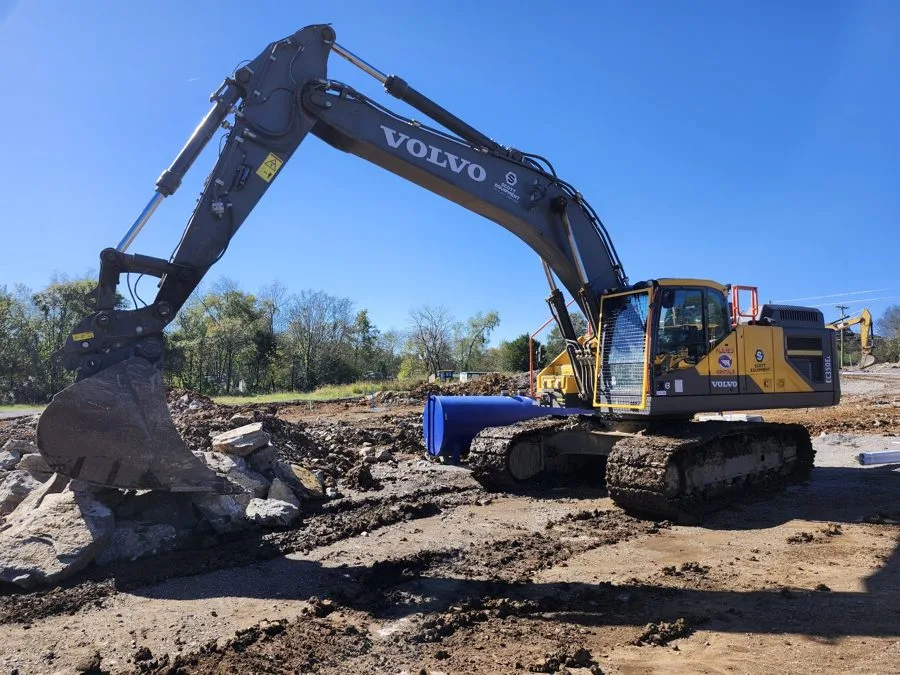
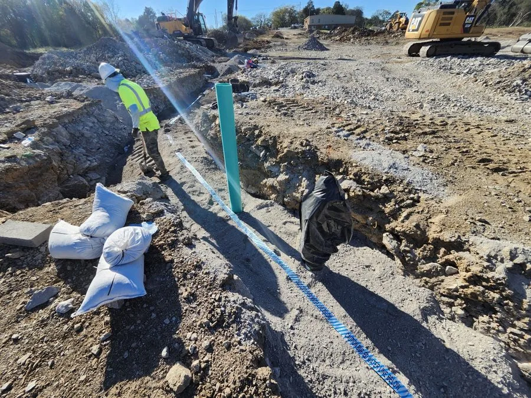

Field Entry
01
Land Development

Overview
End-to-end residential land development — lender-grade cost estimation, civil plan sets, utility routing, and live budget control from ground-break to delivery.

Technologies
- Pre-Construction Estimation
- Civil & Site Plan Sets
- Grading & Drainage
- Utility Installation
- Permitting & Code Compliance
Capabilities
Field Notes
- 10-acre, 11-lot subdivision budgeted in full before ground-break; financing secured through lender-scrutinized cost estimation.
- Directed licensed engineers on complete civil and site plan sets; reviewed for constructability, cost, and code.
- Planned and oversaw complete utility installation across the subdivision.
- Live budget monitoring during construction — scope and procurement adjusted to protect margins. Both most recent projects completed profitably.
- Coordinated engineers, subcontractors, investors, and city/state officials through permitting, inspection, and delivery.
Field Photos